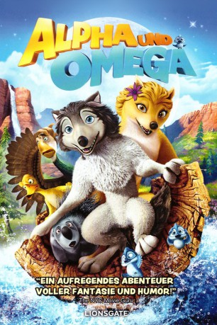

#1089 Alpha & Omega
Alternativ: Alpha and Omega
 
 IMDB-Wertung: 5.3 / 10
IMDB-Wertung: 5.3 / 10  Metascore: 36
Metascore: 36 
Kate ist eine dominante und ehrgeizige Wolfsdame, während der haarige Humphrey nur in den Tag hinein lebt. Doch als die beiden jungen Wölfe von Parkrangern gefangen und weit aus ihrem Revier gebracht werden, müssen sie trotz ihrer unterschiedlichen Charaktere zusammenhalten.
Jahr: 2010
Dauer: 90 Minuten
FSK:
Land: USA Studio: LionsgateTonspuren: DTS - ,
Untertitel: Deutsch,
Auflösung: 720p (1280x720) Größe: 3276 MB
Genre: Animation/Trick, Abenteuer, Komödie, Familie, Liebe
Regisseur: Anthony Bell, Ben Gluck
Drehbuch: Chris Denk, Ben Gluck, Steve Moore
Soundtrack: Chris Bacon
Darsteller:
Datei: X:\Kinder Filme (A-F)\Alpha & Omega (2010, FSK, 1280x720).mkv seit 18.05.2015
Festplatte: Kinder-Filme+Trick
 Es gibt insgesamt 68 Filme in der Gruppe 'Kinder Filme (A-F)'
Es gibt insgesamt 68 Filme in der Gruppe 'Kinder Filme (A-F)'